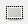

Que es el GIMP?
GIMP va ser desenvolupat com una alternativa lliure al Photoshop, però aquest últim encara domina el mercat en les indústries d'impressió i gràfiques.
GIMP es el programa de manipulación de imágenes GNU. Es una pieza libremente distribuida de software para tareas como retoque fotográfico, composición de imagen y creación de imagen. Utiliza gráficos de mapa de bits, que en este caso es una cuadrícula de píxeles por donde el valor de color de cada píxel individual es guardado y aparece en su pantalla. Esta es la base de formatos de archivo como JPG y PNG.
Diferencia entre el Inkscape
La diferencia entre Inkscape y Gimp es que Inkscape utiliza gráficos vectoriales, mientras que Gimp utiliza gráficos rasterizados (gráficos de mapa de bits). El vector es preferido para diseños más simples que se basan en formas y puntos geométricos. No quiere decir que no se pueden crear gráficos complejos con el vector, pero terminarás en mucho tiempo el procesamiento. Mientras que los formatos vectoriales son muy dinámicos y perfectos en calidad, no hay máxima compatibilidad para las aplicaciones, lo que puede dar lugar a problemas de representación. El mapa de bits se utiliza mejor cuando sus gráficos o fotos requieren la máxima cantidad de detalles, pero estar preparados para aumentar rápidamente los tamaños del archivo y la pérdida de definición cuando usted necesita agrandar o aumentar el zoom. Los formatos de mapa de bits son una manera fácil y compatible para mostrar todo lo que quieras, son mucho más difíciles de editar e imposible aumentar la calidad sin necesidad de cambiar la fuente.
Algunas de sus herramientas:
Esta herramienta sirve para seleccionar areas rectangulares de la imagen. Esta herramienta sirve para seleccionar areas circulares y elípticas de la imagen.
Esta herramienta sirve para seleccionar areas circulares y elípticas de la imagen.La goma de borrar sirve, como su nombre indica, para borrar areas de la capa actual o de una selección
 La herramienta de clonar sirve para copiar una seccion del area de la imagen y copiarla.
La herramienta de clonar sirve para copiar una seccion del area de la imagen y copiarla.